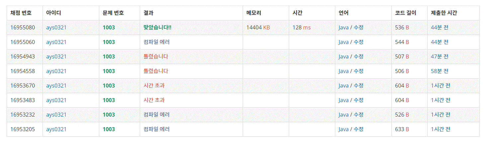

1003번 피보나치 함수
문제요약
N이 주어졌을 때, fibonacci(N)을 호출했을 때, 0과 1이 각각 몇 번 출력되는지 구하는 프로그램을 작성하시오.
private static int odd = 0;
private static int even = 0;
public static void main(String[] args) {
Scanner input = new Scanner(System.in);
int i = 0;
i = input.nextInt();
int n;
for(int a = 0; a < i; a++) {
odd = 0;
even = 0;
n = input.nextInt();
fibonacci(n);
System.out.print(odd + " " + even);
}
}
public static int fibonacci(int n) {
if (n == 0) {
odd++;
return 0;
} else if (n == 1) {
even++;
return 1;
} else {
return fibonacci(n-1) + fibonacci(n-2);
}
}
재귀로 푸니 시간이 오래걸려서 시간 초과가 떠서 다시 풀었다.
public static void main(String[] args) {
Scanner input = new Scanner(System.in);
int i = input.nextInt();
for(int a = 0; a < i; a++) {
int n = input.nextInt();
int b = fibonacci(n-1);
int c = fibonacci(n);
System.out.println(b + " " + c);
}
}
public static int fibonacci(int n) {
if(n == 0)
return 0;
if(n <= 1)
return 1;
int a = 0;
int b = 1;
int c = 1;
for(int i = 0; i < n-2; i++) {
a = b;
b = c;
c = a + b;
}
return c;
}
0과 1의 횟수에도 재귀가 존재 한다는 것을 인지한 후
동적프로그래밍기법을 활용하여 문제를 풀었다.
